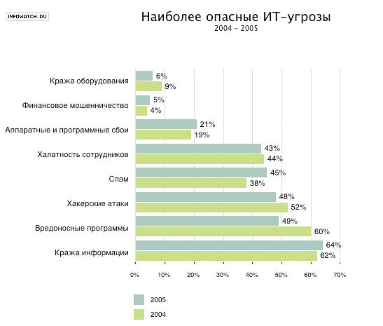
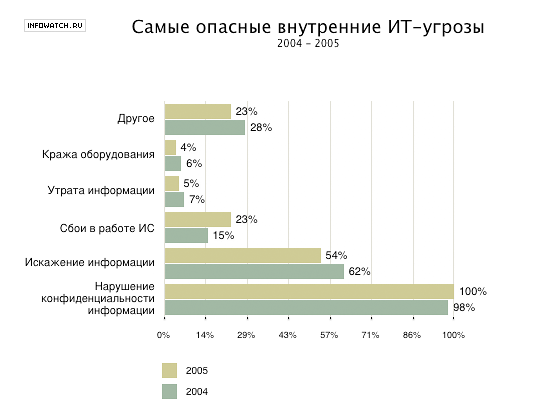
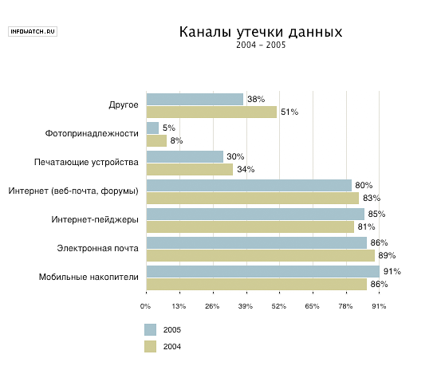
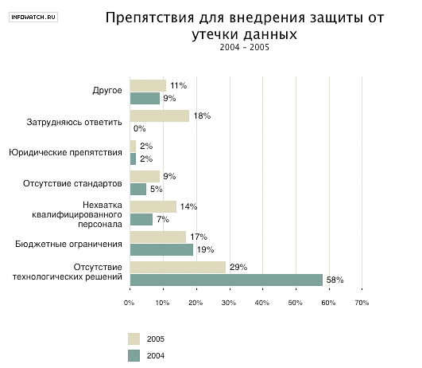

Защита компьютерной сети является одним из наиболее важных и сложных аспектов сетевой технологии. Причем наибольшую сложность составляют вопросы обеспечения Internet-безопасности современных корпоративных сетей. Проблема безопасности в Internet усугубляется тем, что Internet разрабатывалась как открытая система, при этом вопросам безопасности стека протоколов TCP/IP уделялось очень мало внимания. И все это происходит на фоне, с одной стороны, всевозрастающего количества различных вредоносных программ (вирусы, черви, троянские кони и др.) и технологий, а с другой, — увеличивающейся стоимости и значимости корпоративной информации.
Особенностью обеспечения технологии сетевой безопасности организации (предприятия, фирмы), в плане профессиональной подготовки, являются высокие требования к специалистам по информационной безопасности (к специалистам отдела информационной безопасности, а в небольших организациях — к системному администратору). Специалист по информационной безопасности должен обладать не только глубокими специальными знаниями, должен не только регулярно отслеживать состояние в области безопасности (http://www.bezpeka.com/, http://www.bugtraq.ru/), но и уметь руководствоваться здравым смыслом. В некоторых литературных источниках приводят такое соотношение: 98% здравого смысла и 2% технологии. Очевидно, что специалистов, отвечающих таким требованиям не так много, при этом разрыв между спросом и предложением на этих высокооплачиваемых специалистов велик и постоянно растет.
Под информационной безопасностью понимают защищенность информации от случайных или преднамеренных воздействий (угроз) естественного или искусственного характера, связанных с нанесением ущерба информационной системе.
Обеспечение информационной безопасности корпоративной сети является комплексной проблемой, разрешение которой требует системного подхода предполагающего анализ и структурирование возможных нарушений с последующей разработкой и внедрением необходимых средств обеспечения информационной безопасности.
Для уяснения сложности и многоплановости анализа возможных нарушений информационной безопасности обратимся к результатам исследований, выполненных компанией InfoWatch в области корпоративной защиты информации от внутренних угроз («Внутренние ИТ-угрозы в России 2005»), и опубликованных на сайте http://www.infowatch.ru. Здесь же можно получить «свежую» аналитическую информацию.
На рис. 8.1 приведена статистика наиболее опасных ИТ-угроз, а на рис. 8.2 - самых опасных внутренних ИТ-угроз (взяты из названного источника).

Рис. 8.1. Наиболее опасные ИТ-угрозы.

Рис. 8.2. Самые опасные внутренние ИТ-угрозы
Заметим, что на этих рисунках приведены лишь наиболее опасные угрозы, при этом каждая из приведенных видов угроз, как правило, включает подвиды. Так, например, кража включает:
кражу технических средств (винчестеров, системных блоков, ноутбуков и т.д.);
кражу носителей информации (магнитных, оптических и др.);
кражу информации (несанкционированное копирование и др.);
кражу средств доступа (ключи, пароли и т.д.).
Далее, например, срез «вредоносные программы» включает: вирусы, черви, троянские кони, бомбы, салями и т.д.
На рис. 8.3 приведена информация по каналам утечки данных.

Рис. 8.3 Каналы утечки данных
Обеспечение информационной безопасности предполагает использование определенных средств безопасности, см. рис. 8.4

Рис. 8.4. Популярные средства ИТ-безопасности.
Однако системного подхода требуют не только анализ возможных нарушений и разработка технологических средств информационной безопасности, но и сам процесс внедрения этих средств. Препятствия, связанные с внедрением средств ИТ-безопасности отражены на рис. 8.5.

Рис. 8.5. Препятствия, связанные с внедрением средств ИТ-безопасности.
Закончим этот пункт известным постулатом: абсолютную (100%) защиту обеспечить нельзя. Однако сбалансированный комплексный подход к созданию системы защиты информации, начинающийся с проработки технического задания и заканчивающийся оценкой эффективности и качества системы защиты, позволит при фиксированных затратах обеспечить максимальный процент защиты. При таком подходе система защиты информации приобретает интегративные (эмерджентные) свойства, которые не присущие ни одной из ее составных частей.
Система защиты информации является сложной системой, поэтому процесс ее создания, как и всякой другой сложной системы, представляет собой поэтапный последовательно-циклический процесс. Наиболее полно обсуждаемый процесс описан в различных регламентирующих документах и стандартах, например, в ISO 17779, ISO 27001 RFC 2196 и др. Кроме названных стандартов, которые относятся к уровню менеджмента, существует и множество других международных стандартов по информационной безопасности (стандарты на криптосистемы, стандарты защищенной передачи данных и т.д.).
Понятийный же базис в области информационной безопасности был заложен в так называемой "Оранжевой книге": стандарт Министерства обороны США (Department of Defense Trusted Computer System Evaliation Criteria, 1985 г.). Позднее была выпущена "Радужная серия", наиболее значимым документ которой: "Интерпретация "Оранжевой книги" для сетевых конфигураций" (Trusted Network Interpretation; 1987 г.). Этот документ содержит важнейшие концептуальные понятия (включая криптографические аспекты), и описание сервисов безопасности в области сетевых конфигураций.
Одной из наиболее удачных технологий создания современных систем безопасности считается разработанная компания Cisco Systems стратегия безопасности, получившая название SAFE, которая включает следующие этапы:
1. Политика безопасности.
2. Средства обеспечения политики безопасности.
3. Мониторинг.
4. Тестирование
5. Управление и улучшение.
Разработка политики безопасности организации (компании) предполагает создание документа, регламентирующего принципы информационной безопасности, которыми должен руководствоваться каждый сотрудник организации. На данном этапе целесообразно использовать стандарты ISO 17799 RFC ISO 27001 RFC 2196.
На втором этапе согласно разработанной политике безопасности проектируется система комплексного обеспечения безопасности. Используются межсетевые экраны, системы обнаружения атак, устройства шифрования и другое необходимое оборудование, а также реализуются организационные и физические методы обеспечения безопасности.
Третий этап предполагает внедрение систем постоянного мониторинга и анализа активности в сети компании на базе информации, полученной от систем обнаружения атак, серверов SNMP, а также различных систем регистрации.
Четвертый этап связан с вопросами тестирования существующей сети на предмет ее уязвимости путем использования специализированных сетевых сканнеров, которые позволяют обнаружить слабые места и элементы в системе защиты, и выдают некоторые рекомендации по их устранению.
На пятом, завершающем, этапе реализуется управление всеми устройствами обеспечения безопасности, а также оптимизация параметров элементов защиты в существующей системе. В последующем можно проводить и модернизацию существующей системы безопасности.
Политика информационной безопасности представляет собой изложение целей, задач и решений которые должны быть достигнуты при внедрении системы защиты информации. В политике информационной безопасности должны быть отражены:
Предмет политики (предметная область, терминология, цель и причины разработки политики).
Позиция руководства организации (решение руководства по данной политике, разрешения и запреты по использованию ресурсов).
Применимость политики (где, как, когда, кем и к чему применяется данная политика).
Роли и обязанности должностных лиц (ответственные лица и их обязанности в плане разработки и внедрения политики безопасности).
Реализация политики (регламент, нарушения и наказание).
Справочная информация и консультанты по безопасности.
Защита сети охватывает следующие уровни:
Физическая защита.
Контроль действий пользователей.
Программная защита.
Физическая защита предполагает ограничение доступа пользователей к серверам, маршрутизаторам, брандмауэрам и другой сетевой аппаратуре путем ограничение доступа в помещение, в котором расположена аппаратура, или/и посредством идентификационных карт, карточек-ключей и т. п.
Контроль действий пользователей предполагает аутентификацию, аудит и управление рабочей средой пользователей. Неправильно сформированная в этой части политика безопасности или ее несоблюдение(записанный на бумажке пароль или незаблокированная администратором консоль) может свести на нет все усилия по обеспечению физической или программной защиты сети.
Программная защита предполагает анализ уязвимости программной среды, идентификацию и устранение потенциальных точек воздействия, закрытие дыр, черных ходов (back doors) и защиту от атак. В сети, требующей высокого уровня защиты, значительная часть работы связана с отслеживанием новых эксплойтов (документированных способов проникновения в систему) и осуществлением превентивных мер, направленных на устранение возможности их применения в сети.
Технология защиты сети базируется на использовании определенного комплекса средств обеспечения безопасности. К основным средствам обеспечения безопасности относятся: антивирусные программы, антишпионские программы , анализаторы сетевых протоколов, брандмауэры, сканеры сетевой безопасности.
Несмотря на сложность и многоплановость самой проблематики защиты сети потеря работоспособности сети во многих случаях обусловлена тривиальными причинами. Так по данным Международного общества компьютерной безопасности ICSA (International Computer Security Association), более 90% времени, стоимости и усилий, направленных на нейтрализацию последствий потери данных или служб в сетях, затрачиваются вследствие таких банальных причин, как вирусы, нарушение энергопотребления и злонамеренные действия персонала организаций. При этом в 70% проникновение в сети и системы осуществляется самими сотрудниками организаций.
Сложность проблематики информационной безопасности трудно переоценить. Эта сложность обусловлена не только спецификой сетевых технологий и конфликтным характером атакующей и противоборствующей сторон, но и факторами организационного, мотивационного, психологического, финансового и другого характера. При этом здесь очень важна правильная позиции высшего руководства организации и высокая оплата специалистов, обеспечивающих безопасность системы.
Более детальному знакомству со спецификой сетевой безопасности, основными положениями и литературой в данной области, а также практическому освоению технологии диагностики и борьбы с нарушением сетевой защиты посвящены 4, 5, 7 и 8 практические занятия по данному курсу.